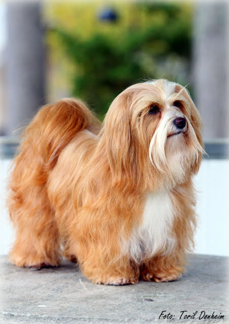
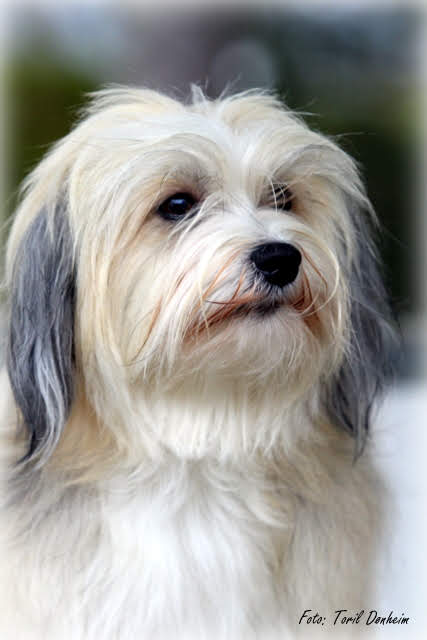
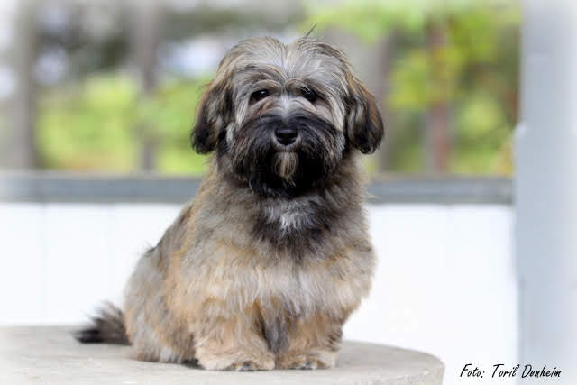
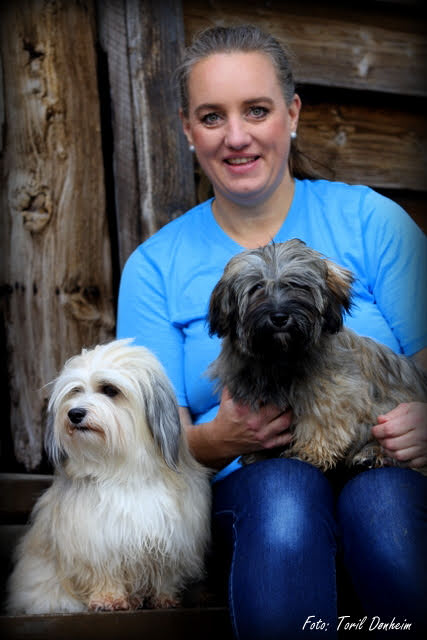

<!-- {sett inn path}, laget av Jon, begynte 15.10.18, hovedsida vår -->
<html>
<head>
    <title>Teigestova</title>
        <meta charset="UTF-8">
        <meta name="description" content="Hjemmeside for oppdretter av Bichon Havanais hunder">
        <meta name="keywords" content="valp, salg, bichon havanais, oppdretter, kennel, hund, rase">
        <meta name="viewport" content="width=device-width, initial-scale=1.0">
        <link rel="stylesheet" href="../css/style13.css">
        <link href="https://fonts.googleapis.com/css?family=Playfair+Display|Roboto" rel="stylesheet">
        <link rel="icon" type="image/png" href="../img/faviconpaw.png" sizes="32x32"/>
        <link rel="stylesheet" href="https://use.fontawesome.com/releases/v5.4.2/css/all.css" integrity="sha384-/rXc/GQVaYpyDdyxK+ecHPVYJSN9bmVFBvjA/9eOB+pb3F2w2N6fc5qB9Ew5yIns" crossorigin="anonymous">
</head>
</html>

<body>
    <nav id='navigation_bar'></nav>
    <script src="../scripts/nav-part.js"></script>
<!-- This is the main part of our website. The idea is a relatively long frontpage where the user can either scroll down to get a relatively short summary of everything else on the side. -->
    <div id="start"></div>
        
        
    </div>

    <div id="introContainer">
        
        <h2 class="intro">Velkommen til Teigestova</h2>    
        <p class="intro"> Vi i Teigestova driver med oppdrett av hunder tilhørende rasen 'Bichon Havanais'. Dette gjør vi fra vårt kjære hjem i Ålesund, hvor vår familie har flere års erfaring med stell av hunder. Dette er noe vi begynte med fordi vi raskt så at hundeflokken vår vokste og som en følge gikk det over til å bli en fulltids hobby uten like. Vi har et ønske om at også du skal kunne få tilbringe tid med denne herlige rasen av hund som er like intelligent som de er selskapssyke. </p>
    </div>

    <div class="dogs">
        <h2>Hils på hundene våre</h2>
            
            <!--<h3>Goldie</h3>
                <h4>Les mer om <strong>meg</strong>.</h4>-->
            
                <!--<h3>Ariana</h3>
                <h4>Les mer om <strong>meg</strong>.</h4>-->
            
            <h3 class="dogsText">Goldie</h3>
            <h3 class="dogsText">Ariana</h3>
            <h3 class="dogsText">Whitney</h3>
            <h4 class="dogsText">Les mer om <strong>meg</strong>.</h4>
            <h4 class="dogsText">Les mer om <strong>meg</strong>.</h4>
            <h4 class="dogsText">Les mer om <strong>meg</strong>.</h4>
    </div>

    <div id="monochrome">
        
        <p class="monochromeParagraph" class="monochromeFloat">
            Havanaisene er livlige, nysgjerrige og oppvakte med glimt i øyet. De kan være svært sosiale og de trives som regel godt sammen med andre hunder og andre dyr. De er kjent for å komme godt overens med barn, men barn og hund må selvfølgelig lære å respektere hverandre. En havanais vil gjerne varsle om det kommer noen, men vedvarende gneldring er ikke typisk for rasen. Rasen har ikke noe utpreget jaktinstinkt, men enkelte kan vise noe gjeterinstinkt.
            <br>
            <br>
            Krever mye pelsstell, men røyter ikke. Det er en frisk rase som lever lenge. De er særdeles lettlærte, førerorienterte, energiske og pleier ikke å være vanskelige å motivere. En havanais har stort behov for menneskelig kontakt. Utholdenheten og fysikken kan sammenlignes med en jevnstor terrier. En havanais som blir holdt i god form kan fint være med på lengre turer.
        </p>
    </div>

    <div id="contactContainer">
        
        <h5 class="formClient">Kontakt Oss</h5>
            <form class="formClient">
                    <label for="fult_navn">
                        Fult navn: <br>  <!--Fiks denne, nødvendig med teks når jeg bare kan bruke "value"?-->
                        <input id="fult_navn" type="text" name="Fult navn"> <br>  <!--Pattern krever at det kun er alfabetiske bokstaver, la ikke på norsk fordi oppgaven er engelsk-->
                     </label>
                     <label for="telefonnummer:">
                         Telefonnummer: <br>
                         <input id="telefonnummer" type="text" name="Telefonnummer"> <br>
                     </label>

                     <label for="melding">
                        Melding: <br>
                        <textarea rows="5" cols="18" id="melding"></textarea> <br>
                     </label>
                <input  type="submit" value="Send beskjed" onclick="fake_form();">
            </form>
    </div>

<!-- This section is used together with style13.css and imageView.js to create the image viewer when clicking on images. -->
    <!--  This div element contains the lightbox container together with all the buttons and a new full size image of every picture
    we want to appear in the lightbox.  -->
    <div id="imageView" class="imageViewer">
        
    <!-- This adds an 'X' ('&times;') to the imageViewer as well as making it run the close_image function when clicked -->
    <span class="closeViewer" onclick="close_image()"> &times; </span>

            <!-- This either adds or removes 1 from the variable 'n' used in change_image(), which in turn decides which picture is shown in fullscreen -->
            <a class="nextImage" onclick="change_image(1)"> &#10095; </a>
            <a class="previousImage" onclick="change_image(-1)"> &#10094; </a>
        </div>
    </div>

    <footer id='paw'></footer>
    <script src="../scripts/pawer.js"></script>
    
    <script src="../scripts/imageView.js"></script>
</body>